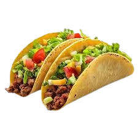

Tacos
Home

Taco recipe
A classic Mexican dish with seasoned meat, fresh vegetables and cheese in a crispy shell.
Ingredients for tortilla dough
- Flour: 300g
- Water: 160ml lukewarm
- Oil: 1 splash
- Salt: a pinch
Meat filling
- Protein: 500g lean meat (sirloin, flank or skirt steak) cut into thin strips
- Vegetables: 1 red onion, 1 white onion and bell peppers of various colors (red, green, yellow)
- Seasoning: salt, pepper and cilantro
Preparation steps
- Base: Warm up the tortilla (you can use two if they are very thin)
- Center: Add the meat with the sautéed vegetables
- Freshness: Add raw chopped onion and fresh cilantro
- Sauces: Add a portion of guacamole (mashed avocado with lemon, tomato and onion)
- Final touch: A few drops of lime and your favorite hot sauce
- Enjoy your homemade tacos while still warm!